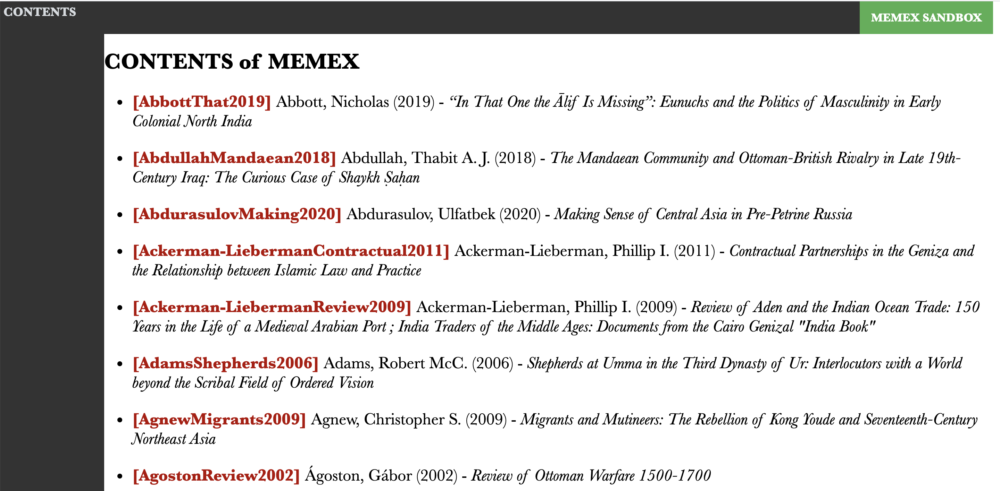

9 Lesson 09
9.1 Building Memex - Step 3
Now, as we have images of pages extracted and OCRed, we may want to create some intefrace that would allow us to move around our memex and do rather traditional reading of publications in our library. Perhaps the easiest way for building a simple interface would be to use HTML, which allows to easily link everything together and can be easily used in any browser.
What do we need to do? We want a function that creates interconnected HTML pages for each publication—with all the relevant bibliographical information included into each and every page. The working function is actually given below: your main task here will be to figure out how it works; and to write a bit of code that processes every publication in your memex (essentially, you will need to slightly modify a “processAll” function from previous assignments).
Your other, more difficult task will be to generate a starting page and a page that lists all publications in your memex and allows one to navigate from there to any of listed publications. Details are given below. Keep reading :)
(You do not really need to know any HTML to complete this assignment, but, just in case you are curious, you can find links to relevant materials in Additional Materials below).
9.2 Code snippets & functions
9.2.1 The main function: Publication Interface
Here is one, big, scary function that merges together page images, OCR-ed text, and bibliographical information into a simple HTML-based interface. While it looks long and scary, it is actually quite simple — most of the code is simple fine/replace operations that are populating a template with relevant information.
In a nutshell, the function:
- takes a citation key and the path to a relevant
.bibfile as its arguments - loads:
- OCRed data
- bibliographical information
- an HTML template
- loops through the pages of OCRed data and inserts relevant information into relevant slots
- saves each page into its place
# generate interface for the publication
def generatePublicationInterface(citeKey, pathToBibFile):
print("="*80)
print(citeKey)
jsonFile = pathToBibFile.replace(".bib", ".json")
with open(jsonFile) as jsonData:
ocred = json.load(jsonData)
pNums = ocred.keys()
pageDic = functions.generatePageLinks(pNums)
# load page template
with open(settings["template_page"], "r", encoding="utf8") as ft:
template = ft.read()
# load individual bib record
bibFile = pathToBibFile
bibDic = functions.loadBib(bibFile)
bibForHTML = functions.prettifyBib(bibDic[citeKey]["complete"])
orderedPages = list(pageDic.keys())
for o in range(0, len(orderedPages)):
#print(o)
k = orderedPages[o]
v = pageDic[orderedPages[o]]
pageTemp = template
pageTemp = pageTemp.replace("@PAGELINKS@", v)
pageTemp = pageTemp.replace("@PATHTOFILE@", "")
pageTemp = pageTemp.replace("@CITATIONKEY@", citeKey)
if k != "DETAILS":
mainElement = '<img src="@PAGEFILE@" width="100%" alt="">'.replace("@PAGEFILE@", "%s.png" % k)
pageTemp = pageTemp.replace("@MAINELEMENT@", mainElement)
pageTemp = pageTemp.replace("@OCREDCONTENT@", ocred[k].replace("\n", "<br>"))
else:
mainElement = bibForHTML.replace("\n", "<br> ")
mainElement = '<div class="bib">%s</div>' % mainElement
mainElement += '\n<img src="wordcloud.jpg" width="100%" alt="wordcloud">'
pageTemp = pageTemp.replace("@MAINELEMENT@", mainElement)
pageTemp = pageTemp.replace("@OCREDCONTENT@", "")
# @NEXTPAGEHTML@ and @PREVIOUSPAGEHTML@
if k == "DETAILS":
nextPage = "0001.html"
prevPage = ""
elif k == "0001":
nextPage = "0002.html"
prevPage = "DETAILS.html"
elif o == len(orderedPages)-1:
nextPage = ""
prevPage = orderedPages[o-1] + ".html"
else:
nextPage = orderedPages[o+1] + ".html"
prevPage = orderedPages[o-1] + ".html"
pageTemp = pageTemp.replace("@NEXTPAGEHTML@", nextPage)
pageTemp = pageTemp.replace("@PREVIOUSPAGEHTML@", prevPage)
pagePath = os.path.join(pathToBibFile.replace(citeKey+".bib", ""), "pages", "%s.html" % k)
with open(pagePath, "w", encoding="utf8") as f9:
f9.write(pageTemp)9.2.2 Additional functions
As we discussed before, sometimes it makes sense to move some of the code into separate functions. These are such functions that I removed from the main code so that it is more readable (although a few more functions can be also extracted from the main code).
TOC Links: The following function generate links to all pages in a given publication so that it is easier to navigate and move around; each page in a publication recieves its own list of links where the current page is colored with red.
def generatePageLinks(pNumList):
listMod = ["DETAILS"]
listMod.extend(pNumList)
toc = []
for l in listMod:
toc.append('<a href="%s.html">%s</a>' % (l, l))
toc = " ".join(toc)
pageDic = {}
for l in listMod:
pageDic[l] = toc.replace('>%s<' % l, ' style="color: red;">%s<' % l)
return(pageDic)HTML-Friendly BIB: The following function simply makes a bib record look more readable, more HTML friendly. It removes excessive curly brackets; and some field that are not needed for display (you can modify it to adjust the way your records look).
9.2.3 Extra function
It always makes sense to write functions that do operations that we need frequently. For example, the fucntion below generates a dictionary of citation keys and paths to specific types of files. For instance, we can quickly create a dictionary of .bib files and then use this dictionary to process all .bib files.
def dicOfRelevantFiles(pathToMemex, extension):
dic = {}
for subdir, dirs, files in os.walk(pathToMemex):
for file in files:
# process publication tf data
if file.endswith(extension):
key = file.replace(extension, "")
value = os.path.join(subdir, file)
dic[key] = value
return(dic)Additional value: in the first two steps we used bibTex bibliography exported from Zotero to process our publications and OCR relevant PDF files. Technically, right after we generated the structure (created all relevant folders, copied PDFs, and generated individual .bib files), we no longer need to rely on our big bibliography file, but rather use the very structure of our memex. The advantage of such an approach is that we can merge multiple memexes and then run only operations that are necessary to connect new publications with old ones.
9.2.4 Code Reuse
We have already discussed functions as a useful mechanism for code reuse; additionally, use can place often-used functions into a separate file (let’s call it functions.py) and import it with import functions in our other script. (IMPORTANT: functions.py must be in the same folder as you other script that imports it).
9.2.5 Missing functions: The Index Page and the Contents Page
Since we are essentially creating a local website, we need a starting page—index.html—which will serve as the main entry point for our memex. Additionally, we would need a page where all the publications of our memex will be listed so that we could go and read whatever we are interested in. Your main task is to write such a function. In general, the main function avobe is your guide, although these two pages are significantly simpler. For the index page you need to “join” the index page template with the index page content (both are prepared and available in ./_misc/ folder). The content page is a bit trickier — you need to generate a list of publications—with links—and “join” it with the index page template.
Your content page may look something like this:

For information for each publication, you should use (at least): author or editor, year, title. You can use the following snippet as an example, but you are more than welcome to come us with your own representation.
<ul>
<li><a href="a/ab/AbbottThat2019/pages/DETAILS.html">[AbbottThat2019]</a> Abbott, Nicholas (2019) - <i>“In That One the Ālif Is Missing”: Eunuchs and the Politics of Masculinity in Early Colonial North India</i></li>
<li><a href="a/ab/AbdullahMandaean2018/pages/DETAILS.html">[AbdullahMandaean2018]</a> Abdullah, Thabit A. J. (2018) - <i>The Mandaean Community and Ottoman-British Rivalry in Late 19th-Century Iraq: The Curious Case of Shaykh Ṣaḥan</i></li>
<li><a href="a/ab/AbdurasulovMaking2020/pages/DETAILS.html">[AbdurasulovMaking2020]</a> Abdurasulov, Ulfatbek (2020) - <i>Making Sense of Central Asia in Pre-Petrine Russia</i></li>
<li><a href="a/ac/Ackerman-LiebermanContractual2011/pages/DETAILS.html">[Ackerman-LiebermanContractual2011]</a> Ackerman-Lieberman, Phillip I. (2011) - <i>Contractual Partnerships in the Geniza and the Relationship between Islamic Law and Practice</i></li>
</ul>To make it a little bit easier, the actual template for each publication may look as follows:
9.3 Homework
- the task is described above.
- additionally, take the solution scripts from the previous lesson and annotate every line of code; submit your annotations together with the main assignment; if you have any suggestions for improvements, please share them (this will count as extra points :).
- upload your results to your memex github repository
- place annotated scripts into
_miscsubfolder
- place annotated scripts into
9.4 Homework Solution
Check the script 3_Interface1.py in the memex_sandbox repository (https://github.com/maximromanov/memex_sandbox).
9.5 Additional materials: HTML, CSS; TFIDF
To get a better idea of HTML and CSS, take a look at the following tutorials at Programming Historian: (Turkel and Crymble 2012b) and (Turkel and Crymble 2012a); see also starting with HTML + CSS.
Next time we will discuss keyword extraction. It will be beneficial for all if you do some readings on TF-IDF. Please, read Chapter 1 in Ramsay’s Reading Machines (Ramsay 2011), which is digitally available via Uni Wien Library; and take a quick look at Lavin’s Analyzing Documents with TF-IDF on Programming Historian (Lavin 2019).
References
Lavin, Matthew J. 2019. “Analyzing Documents with TF-IDF.” Edited by Zoe LeBlanc. The Programming Historian, no. 8 (May). https://doi.org/10.46430/phen0082.
Ramsay, Stephen. 2011. Reading Machines: Toward an Algorithmic Criticism. Topics in the Digital Humanities. Urbana: University of Illinois Press.
Turkel, William J., and Adam Crymble. 2012a. “Creating and Viewing HTML Files with Python.” Programming Historian, July. https://programminghistorian.org/en/lessons/creating-and-viewing-html-files-with-python.
Turkel, William J., and Adam Crymble. 2012a. “Creating and Viewing HTML Files with Python.” Programming Historian, July. https://programminghistorian.org/en/lessons/creating-and-viewing-html-files-with-python.
2012b. “Understanding Web Pages and HTML.” Programming Historian, July. https://programminghistorian.org/en/lessons/viewing-html-files.